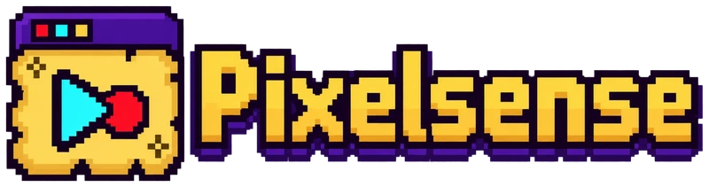

Ready when you are
The browser didn't share your computer's sound. To include it, restart and tick "Share system audio" in the picker. Choose Entire screen, as window sharing has no system audio option.